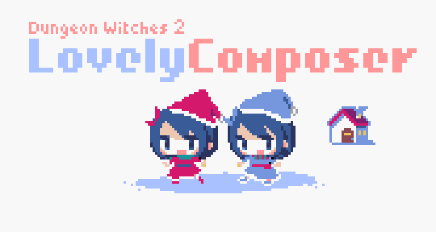

Lovely Composer - Story
Story
In a certain forest … Witches lived quietly in a small house.
The witches should not be found by outsiders. Only the delicious food delivered by the villager Thomas is relied on.
But one day Thomas suddenly changed. Not only he don’t bringing food, but also beating witch’s house strongly.
He was brainwashed to defeat witches by the “Chant” of the “Grizzlia Choir”!
The house is protected by magic, so it’s okay, but the witches will soon be unable to eat food.
So, the witches decided to use the magical instrument “Lovely Composer” to bring Thomas back with the power of music, to regain food and life!